Estoy comodo con el lenguaje que conozco
Nuevo lenguaje? Para qué?
Nuevo lenguaje? Para qué?
Problema
Problema

Resumen del video: 4 ideas en experimentación
Resumen del video: 4 ideas en experimentación
Secuencial -> Concurrente
Secuencial -> Concurrente
- Serie de instrucciones (Computadora, haz esto, luego esto, luego esto, ………)
- Esto debido al Hardware (Maquina de Von Neumann)

Pero ahora existian: Array de Procesadores
Pero ahora existian: Array de Procesadores

Primera solución
Primera solución

Pero es un lio
Pero es un lio


Mejor solución: Modelo Actor
Mejor solución: Modelo Actor
Actor Model (1973)

Programación Funcional, ideal para Modelo Actor
Programación Funcional, ideal para Modelo Actor
- La programación funcional es un paradigma de programación.
- Las funciones son los componentes basicos (no existen objetos).
- El codigo es declarativo.
- La memoria no es compartida.
- Inmutabilidad (no side efects).
y funciona, Erlang by Ericsson (1986)
y funciona, Erlang by Ericsson (1986)

Controlar conmutaciones telefonicas: Fault Tolerance
Controlar conmutaciones telefonicas: Fault Tolerance


La Programación Funcional es dificil de aprender.
La Programación Funcional es dificil de aprender.

Pero es necesario
Pero es necesario
¿Porqué Elixir Language?
¿Porqué Elixir Language?
¿Qué tiene de especial?
Creación
Creación
José Valim (Parte del Core Team de Ruby On Rails)
José Valim (Parte del Core Team de Ruby On Rails)

一I loved everything I saw in Erlang, but I hated the things I didn't see.
Proceso de Creación
Proceso de Creación

Lo mejor de 3 lenguajes de programación
Lo mejor de 3 lenguajes de programación

Ruby -> Elixir filosofia: productividad y diversión
Ruby -> Elixir filosofia: productividad y diversión

Erlang -> Elixir ecosistema, performance, fault tolerance, hot upgrade
Erlang -> Elixir ecosistema, performance, fault tolerance, hot upgrade

Clojure -> Elixir Metaprogramación, DSL(Domain Specific Language), Polymorphism
Clojure -> Elixir Metaprogramación, DSL(Domain Specific Language), Polymorphism

En armonia
En armonia
Elixir is what would happen if Erlang, Clojure, and Ruby somehow had a baby and it wasn’t an accident.
–Devin Torres
Elixir offers developers the functional power and concurrent resilience of Erlang, with friendlier syntax, libraries and metaprogramming.
–Simon St. Laurent
Features
Features
Pattern Matching
Pattern Matching

Pattern Matching =
Pattern Matching =
iex> {nombre, edad} = {"Albert", 27}
iex> nombre
"Albert"
iex> edad
27
iex> {:ok, mensaje} = {:ok, "Holi Woli"}
{:ok, "Holi Woli"}
iex> mensaje
"Holi Woli"
iex> [a,b,c,d,a] = [1,2,3,4,5]
!Error
Pipe Operator |>
Pipe Operator |>
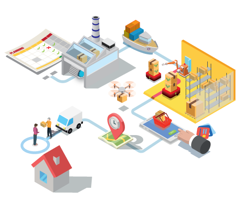
Pipe Operator |>
Pipe Operator |>
Diseñado inicialmente para resolver este problema:
lista = 1..500000 temp = Enum.map(lista, &(&1*2-20)) respuesta = Enum.filter(temp, &(rem(&1, 3) == 0 || rem(&1, 5) == 0)) respuesta = Enum.take(temp, 5) Enum.take(Enum.filter(Enum.map(1..500000, &(&1*2-20)), &(rem(&1, 3) == 0 || rem(&1, 5) == 0)), 5)
Pipe Operator |>
Pipe Operator |>
Podemos usar algo más elegante y eficiente
1..500000 |> Enum.map(&(&1*2-20)) |> Enum.filter(&(rem(&1, 3) == 0 || rem(&1, 5) == 0)) |> Enum.take(5)
Pipe Operator |>
Pipe Operator |>
Pipe Operator |> Lazy Operator
Pipe Operator |> Lazy Operator
Opera solo cuando se debe
iex> procedimientos = 1..500000 |> Stream.map(&(&1*2-20)) |> Stream.filter(&(rem(&1, 3) == 0 || rem(&1, 5) == 0)) #Stream<...> iex> procedimientos |> Enum.take(5) iex> procedimientos |> Enum.to_list
Procesos en Elixir Isolate 2KB Memory
Procesos en Elixir Isolate 2KB Memory
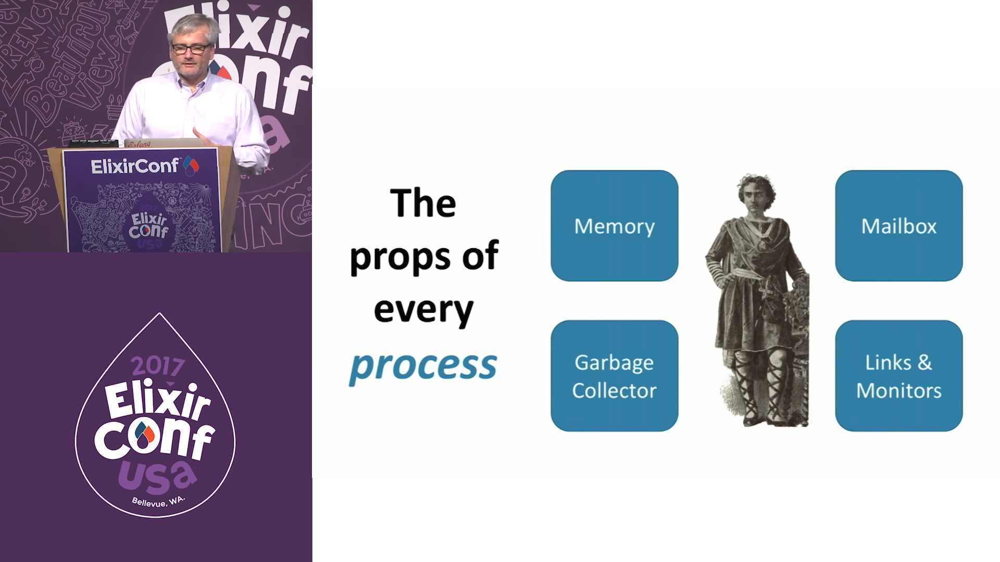
Supervisión de procesos
Supervisión de procesos
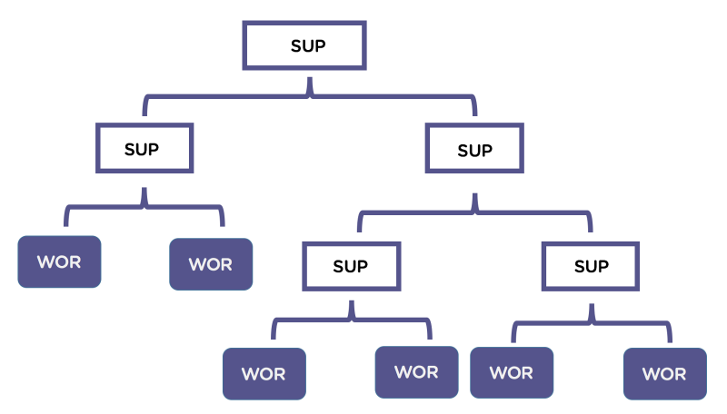
Confiabilidad del 99.9999999%
Confiabilidad del 99.9999999%
一Una red telefonica siempre debera operar independientemente del numero simultaneo de llamadas, bugs inesperados, o llevandose actualizaciones de hardware y software.
– Saša Jurić, Elixir in Action
El proyecto insignia de Erlang (construido por Ericsson) es el AXD301. Lograron una confiabilidad del 99.9999999%, equivalente a 1 segundo de inactividad cada 32 años.
Esa misma confiabilidad se puede alcanzar con Elixir.
Pipe Operator y Procesos Concurrentes
Pipe Operator y Procesos Concurrentes
GenStage: Productores y Consumidores
GenStage: Productores y Consumidores

Real World Business Process
Real World Business Process
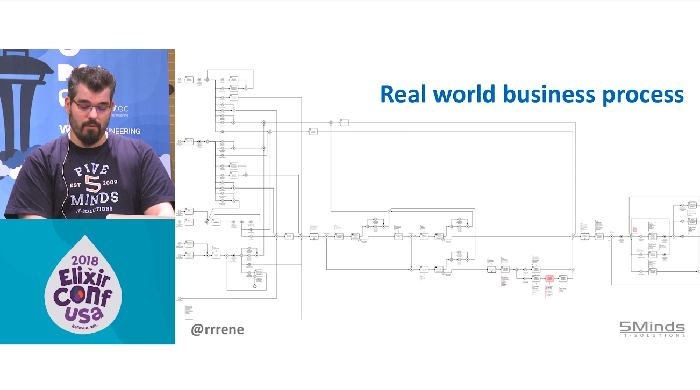
Flow
Flow
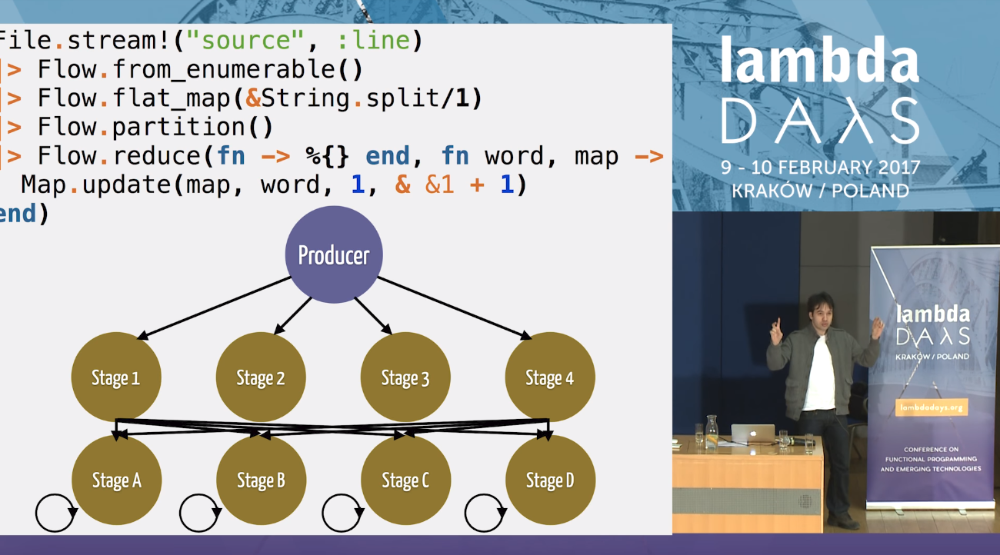
Metaprogramación
Metaprogramación
Metaprogramación
Metaprogramación
¿Quién crea y modifica los lenguajes de programación?
¿Existiran caracteristicas en un lenguaje que no pueden ser implementadas debido decisiones de diseño?
Con elixir no tienes este problema. Elixir da a sus programadores las herramientas necesarias para poder modificar y extender el lenguaje.
Metaprogramación
Metaprogramación
Deja que el lenguaje se acomode a tus necesidades, y no al reves.
– Me
Used properly, metaprogramming lets us create clear, concise programs that treat source code as building blocks instead of as rote lines of instructions.
– Book: Metaprogramming Elixir
Ejemplos de Uso
Ejemplos de Uso
# Book: Metaprogramming Elixir
div do
h1 class: "title" do
text "Hello"
end
p do
text "Metaprogramming Elixir"
end
end
"<div><h1 class=\"title\">Hello</h1><p>Metaprogramming Elixir</p></div>"
Ejemplos: Ecto (Database wrapper and language integrated query)
Ejemplos: Ecto (Database wrapper and language integrated query)
# Imports only from/2 of Ecto.Query
import Ecto.Query, only: [from: 2]
# Create a query
query = from u in "users",
where: u.age > 18,
select: u.name
# Send the query to the repository
Repo.all(query)
Ejemplos: Ecto (Database wrapper and language integrated query)
Ejemplos: Ecto (Database wrapper and language integrated query)
defmodule User do
use Ecto.Schema
schema "users" do
field :name, :string
field :age, :integer, default: 0
has_many :posts, Post
end
end
Ejemplos: Absinthe (GrapghQL)
Ejemplos: Absinthe (GrapghQL)
mutation do
field :submit_comment, :comment do
arg :repo_name, non_null(:string)
arg :content, non_null(:string)
resolve &Github.submit_comment/3
end
end
Polymorphism
Polymorphism
The Expression Problem
The Expression Problem
The Expression Problem
How can we add new types and functions without modifying our existing ones.
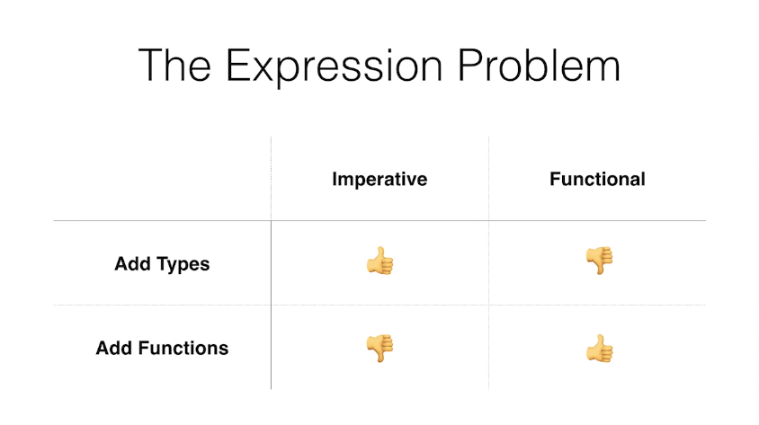
Polymorphism: Protocols
Polymorphism: Protocols
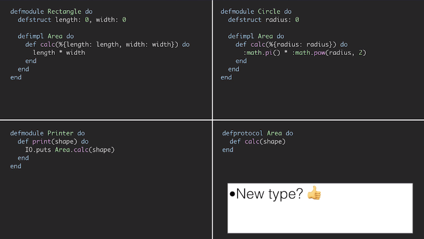
Lenguaje Nuevo: Pocas Librerias?
Lenguaje Nuevo: Pocas Librerias?
- Usar librerias escritas en elixir y Erlang.
- Comunicarte con otros lenguajes (Python o Ruby) y supervisar su proceso.
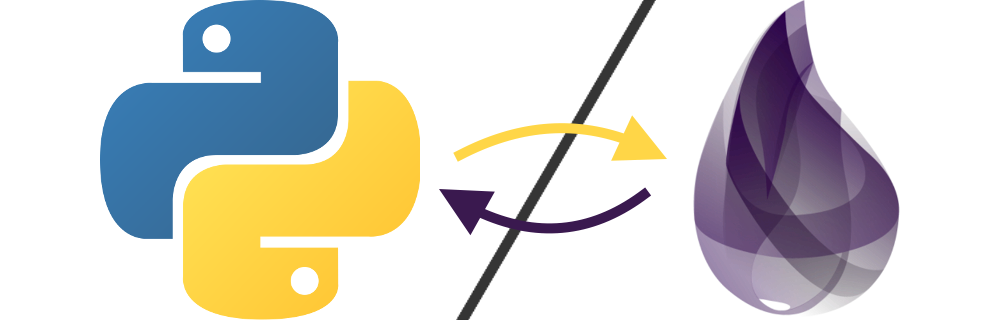
¿Qué puedes hacer con elixir?
¿Qué puedes hacer con elixir?
Aplicaciones Web
Aplicaciones Web
Definición de la locura
Definición de la locura
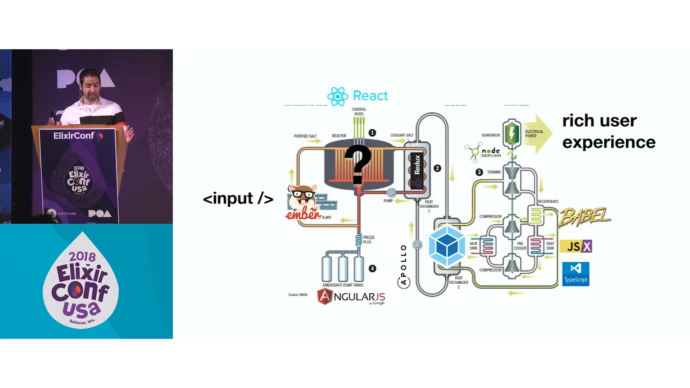
Pero no necesitamos tanto
Pero no necesitamos tanto

Phoenix LiveView
Phoenix LiveView
Interactive, Real-Time Apps - No need to write JavaScrit
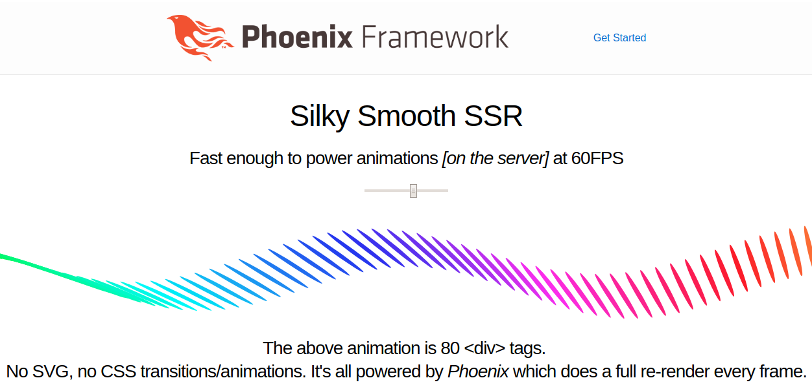
Cliente-Side UI
Cliente-Side UI
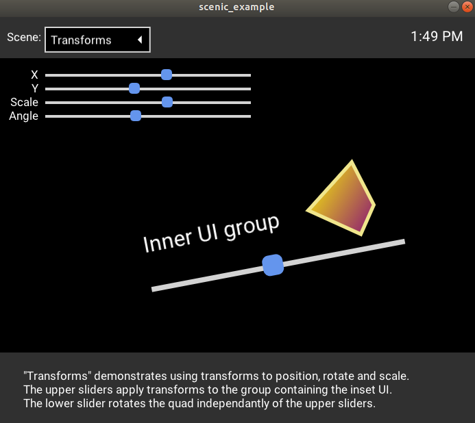
Craft and deploy bulletproof embedded software in Elixir
Craft and deploy bulletproof embedded software in Elixir
Redes Neuronales: Handbook of Neuroevolution Through Erlang
Redes Neuronales: Handbook of Neuroevolution Through Erlang
¿Quién usa Elixir?
¿Quién usa Elixir?
Discord
Discord
Discord
Discord
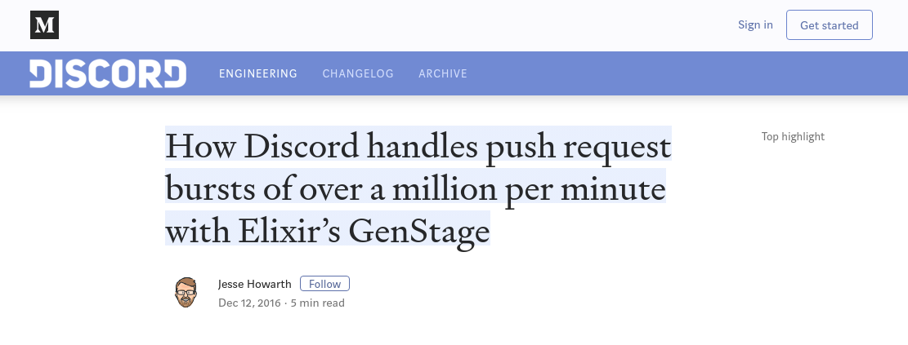
Nintendo Switch
Nintendo Switch

Toyota Connected
Toyota Connected
Pinterest
- 200 servidores python a solo 4 con Elixir.
- 30 instancias c32.xl con Java a solo 15 con Elixir1.
Rose Point (Elixir en Sistemas Embebido)
Rose Point (Elixir en Sistemas Embebido)
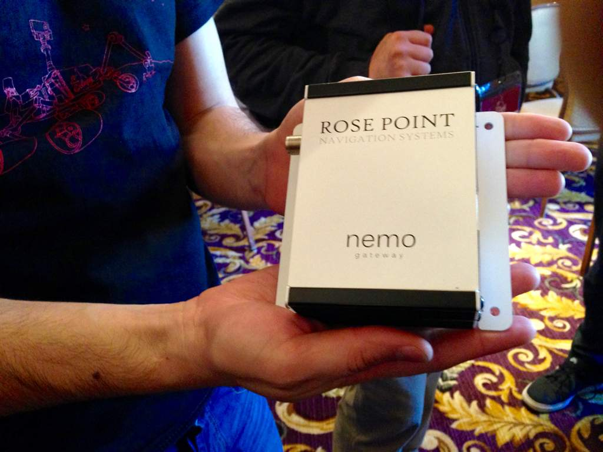
Thank You ˊ・ω・ˋ